Exploring the potential of new GPU features for Convex Hull algorithm
By Roberto Carrasco
Outline
- Introduction
- Basic concepts
- Problem statement
- Hypotheses and goal
- Algorithm
- Advances related to each goal
- Summary
- Work plan
Introduction
What is convex hull?
Why I wanna accelerate that!
- Video Games
- Selfdriver
- Face recognition
- Robotic
- Data mining
Basic concepts
Convex hull algorithms
Preprocessing
Sign Area/Volumen
GPU Architecture
GPU Programming
Convex hull algorithms
| Name | 2D | 3D |
|---|---|---|
| Naive | $O(n^3)$ | $O(n^4)$ |
| Gift Wrapping | $O(n h)$ | $O(n F)$ |
| Graham Scan | $O(n \log n)$ | $No!$ |
| Divide and Conquer | $O(n \log n)$ | $O(n \log n)$ |
| Incremental | $O(n \log n)$ | $O(n^2)$ |
| Quickhull | $O(n \log n),O(n^2)$ | $O(n \log n),O(n^2)$ |

Graham Scan
Convex hull algorithms
| Name | 2D | 3D |
|---|---|---|
| Naive | $O(n^3)$ | $O(n^4)$ |
| Gift Wrapping | $O(n h)$ | $O(n F)$ |
| Graham Scan | $O(n \log n)$ | $No!$ |
| Divide and Conquer | $O(n \log n)$ | $O(n \log n)$ |
| Incremental | $O(n \log n)$ | $O(n^2)$ |
| Quickhull | $O(n \log n),O(n^2)$ | $O(n \log n),O(n^2)$ |

Gift Wrapping
Preprocessing
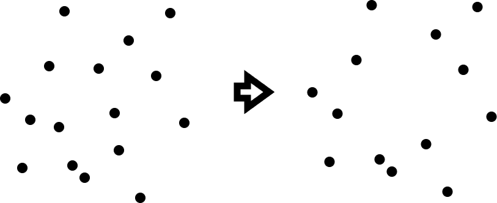Sign Area/Volumen
2D
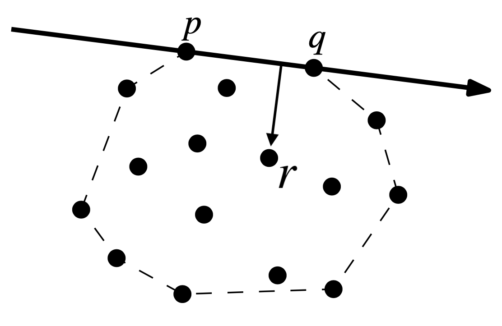3D
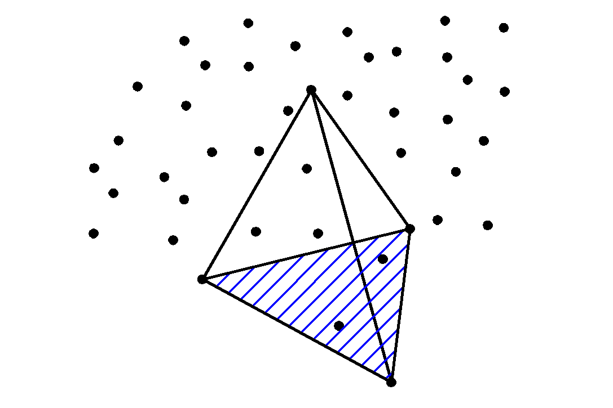GPU Architecture
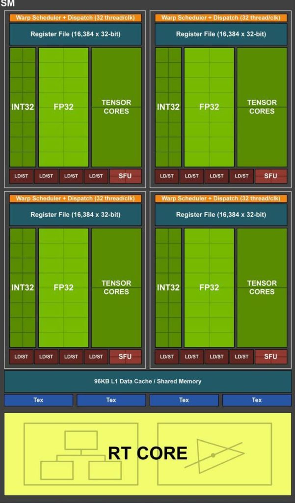GPU Programming

Problem statement
non-prepocessed
prepocessed
Hypotheses and goal
Hypotheses
- A parallel pre-processing technique can improve the state-of-the-art on GPU-based convex hull algorithms.
- The use of the new features of modern GPUs, such as tensor cores and ray tracing cores, can speed up the state-of-the-art GPU convex hull calculation.
Main objective
A parallel algorithms for accelerating convex hull problems over arbitrary point sets, efficient, robust, scalable, and satisfying correctness criteria
Specific objectives
- Review and identify the state-of-the-art convex hull algorithms and filtering techniques.
- Develop GPU pre-processing filtering techniques in two dimensions for convex hull and compare their efficiency with the state-of-the-art.
- Improve the state-of-the-art 3D filtering for convex hull algorithms both sequential and parallel and compare the performance of the new approaches with the state-of-the-art.
- Evaluate the contributions of the proposed algorithms in generating Delaunay triangulations and handling dynamic scenarios.
Algorithm
Require: Set of points
Ensure: Set of points candidate to the hull
1. Finding the polygon/polyhedron
2. Extracting candidate points
3. Computing the convex hull from the candidate points
1. Finding the polygon/polyhedron


1.1 Two Dimension: Eight-side Polygon
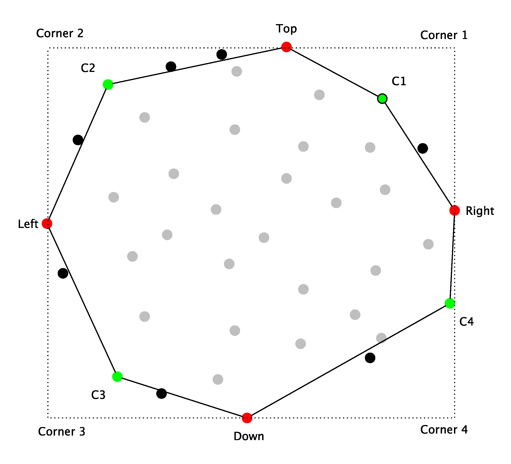1.1 Two Dimension: Eight-side Polygon
Manhattan Distance:
$d = |x_i + y_i + z_i|$
Euclidean Distance:
$d = \sqrt{x_i^2 + y_i^2 + z_i^2}$
1.2 Three Dimension: Twenty-four-face Polyhedron
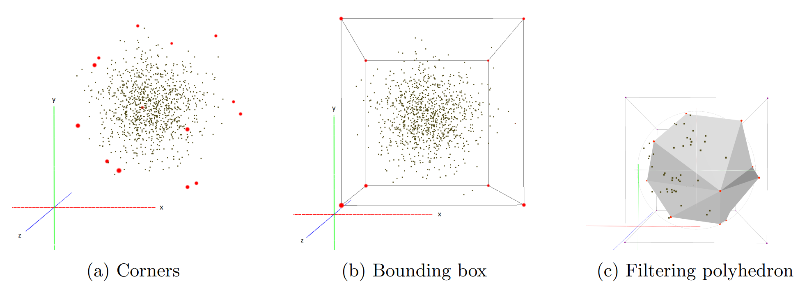2. Extracting Candidate Points
- Determine whether the point is a candidate
- Compacting the output array

2. Extracting Candidate Points
- Determine whether the point is a candidate
- Compacting the output array

2. Extracting Candidate Points
- Determine whether the point is a candidate
- Compacting the output array
- Thrust -> Scan and Copy functions
- CUB -> Flagged
- GPU -> TC Scan based in [1]
[1] Abdul Dakkak, Cheng Li, Jinjun Xiong, Isaac Gelado, and Wen-mei Hwu. Accelerating reduction and scan using tensor core units. In Proceedings of the ACM International Conference on Supercomputing, ICS '19, page 46-57, New York, NY, USA, 2019. Association for Computing Machinery.
3. Computing The Convex Hull From The Candidate Points
Publications
Published in
[1] Roberto Carrasco, Hector Ferrada, Cristobal A. Navarro, Nancy Hitschfeld, An evaluation of GPU filters for accelerating the 2D convex hull, Journal of Parallel and Distributed Computing, Volume 184, 2024, 104793, ISSN 0743-7315, https://doi.org/10.1016/j.jpdc.2023.104793.
Submitted to
[2] Roberto Carrasco, Hector Ferrada, Cristobal A. Navarro, Nancy Hitschfeld, GPU Preprocessing for Accelerating 3D Convex Hull Computation, LATIN24.
Writting
[3] Sergio Salinas-Fernandez, Roberto Carrasco-Cavieres, Nancy Hitschfeld-Kahler, GPolylla: GPU-accelerated polygonal mesh generator
Advances and results related to each objective
Objective 1: Review and identify the state-of-the-art on convex hull algorithms and filtering techniques.
Objective 2: Develop GPU preprocessing filtering techniques in two dimensions for convex hull and compare their efficiency with the state-of-the-art.
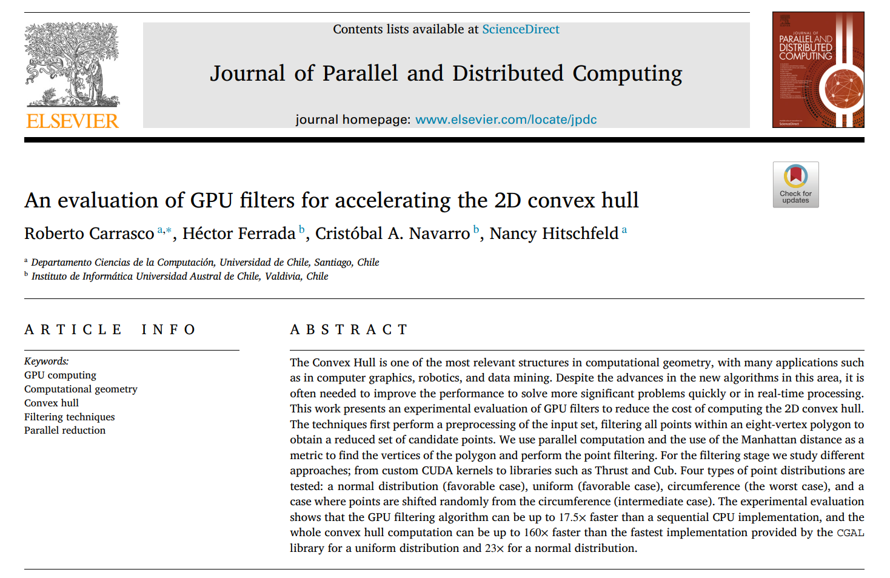Objective 2: Develop GPU preprocessing filtering techniques in two dimensions for convex hull and compare their efficiency with the state-of-the-art.
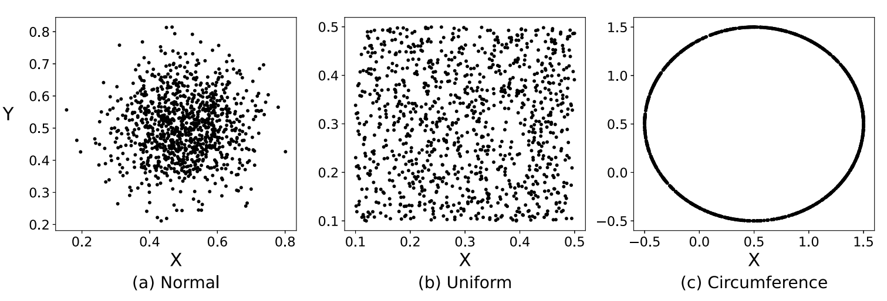Figure: Graphic representation of the distributions. The figure on the left side corresponds to a normal distribution with a mean of 1 and a standard deviation of 0.1. Next to it is a uniform distribution with a mean of 1 and a standard deviation of 0.1. Finally, the figure on the right is a circumference centered at the origin with a radius of 1.
Objective 2: Develop GPU preprocessing filtering techniques in two dimensions for convex hull and compare their efficiency with the state-of-the-art.
Our Variants
- thrust_copy
- thrust_scan
- cub_flagged
- gpu_scan
- omp_manhattan
- omp_euclidean
- cpu_manhattan
- cpu_euclidean
Objective 2: Develop GPU preprocessing filtering techniques in two dimensions for convex hull and compare their efficiency with the state-of-the-art.
Normal
Uniform
Circumference

Objective 2: Develop GPU preprocessing filtering techniques in two dimensions for convex hull and compare their efficiency with the state-of-the-art.
Normal
Uniform
Circumference

Objective 2: Develop GPU preprocessing filtering techniques in two dimensions for convex hull and compare their efficiency with the state-of-the-art.
Normal
Uniform
Circumference

Objective 2: Develop GPU preprocessing filtering techniques in two dimensions for convex hull and compare their efficiency with the state-of-the-art.
Normal
Uniform
Circumference

Objective 2: Develop GPU preprocessing filtering techniques in two dimensions for convex hull and compare their efficiency with the state-of-the-art.
Normal
Uniform
Circumference
Objective 2: Develop GPU preprocessing filtering techniques in two dimensions for convex hull and compare their efficiency with the state-of-the-art.
Competitors
- CGAL:convex_hull_2
- CGAL:graham_andrew
- Qhull
- cudachain
Objective 2: Develop GPU preprocessing filtering techniques in two dimensions for convex hull and compare their efficiency with the state-of-the-art.
Normal
Uniform
Circumference
Objective 2: Develop GPU preprocessing filtering techniques in two dimensions for convex hull and compare their efficiency with the state-of-the-art.
Normal
Uniform
Circumference
Objective 2: Develop GPU preprocessing filtering techniques in two dimensions for convex hull and compare their efficiency with the state-of-the-art.
Normal
Uniform
Circumference
Objective 2: Develop GPU preprocessing filtering techniques in two dimensions for convex hull and compare their efficiency with the state-of-the-art.
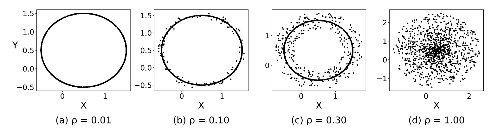Figure: The intermediate-case test with randomly selected displacement at different values.
Objective 2: Develop GPU preprocessing filtering techniques in two dimensions for convex hull and compare their efficiency with the state-of-the-art.
Objective 3: Improve the state-of-the-art on 3D filtering for convex hull algorithms both sequential and parallel and compare he performance of the new approaches with the state-of-the-art.
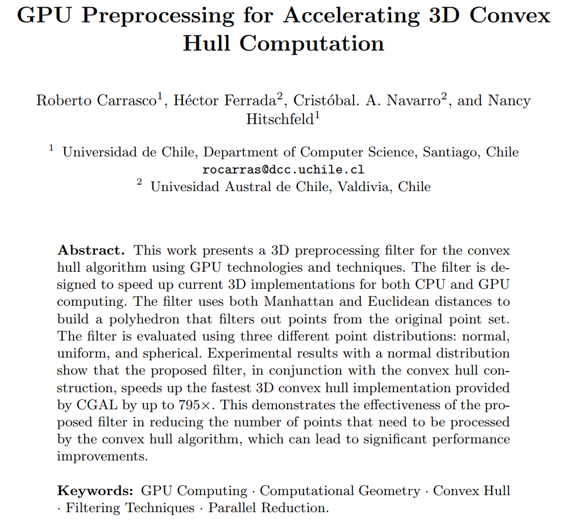Objective 3: Improve the state-of-the-art on 3D filtering for convex hull algorithms both sequential and parallel and compare he performance of the new approaches with the state-of-the-art.
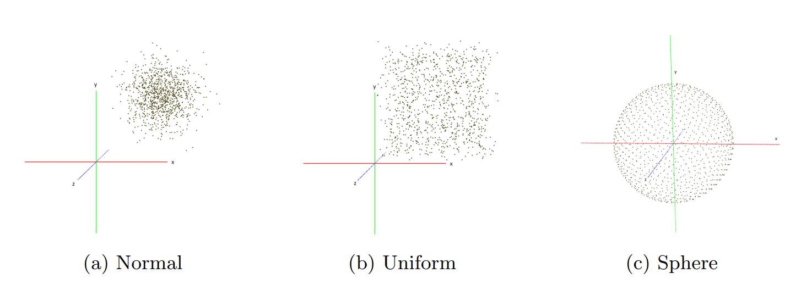Figure: Illustration of the normal, uniform, and spherical distributions using randomly generated points in 3 dimensions.
Objective 2: Develop GPU preprocessing filtering techniques in two dimensions for convex hull and compare their efficiency with the state-of-the-art.
Normal
Uniform
Sphere
Objective 2: Develop GPU preprocessing filtering techniques in two dimensions for convex hull and compare their efficiency with the state-of-the-art.
Normal
Uniform
Sphere
Objective 3: Improve the state-of-the-art on 3D filtering for convex hull algorithms both sequential and parallel and compare he performance of the new approaches with the state-of-the-art.
Ray Tracing... soon
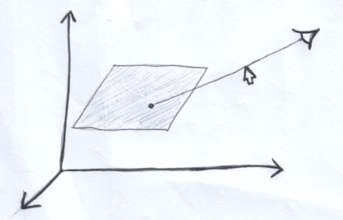Objective 4: Evaluate contributions of the proposed algorithms at generating Delaunay triangulations and handling dynamic scenarios.

Summary
- GPU preprocessing filtering techniques in three dimensions for convex hull
- One CUDA kernel programmed from scratch
- Two implementations using the cub library
- Thrust library
- Accelerates the computation of the convex hull by $160 \times$ with respect to CGAL:convex-hull-2 function provided by CGAL for the best of cases
- The cost of running the filtering algorithm on the GPU is minimal (less than $6\%$) compared to running it on the CPU for the worst of cases.
- Major scalability respect to the state-of-the-art.
- Efficient in most cases, and even in the worst-case scenario, the filtering effort has a small performance penalty compared to a traditional Convex Hull computation.
Summary
- GPU preprocessing filtering techniques in three dimensions for convex hull
- Manhattan distance
- Euclidean distance
- The proposed filter speeds up $795 \times$ the 3D convex hull for a normal distribution and only and in the worst case (spherical) it only adds a small amount of overhead
- High potencial for parallelization with ray tracing.
Summary
- We apply the knowledge acquired in this work to other types of problems.
- Polylla
- nBody problems
- We are working with other research teams and institutions.
- As resulting of this work, we have published one paper, one in revision and one is in preparation.
Work plan
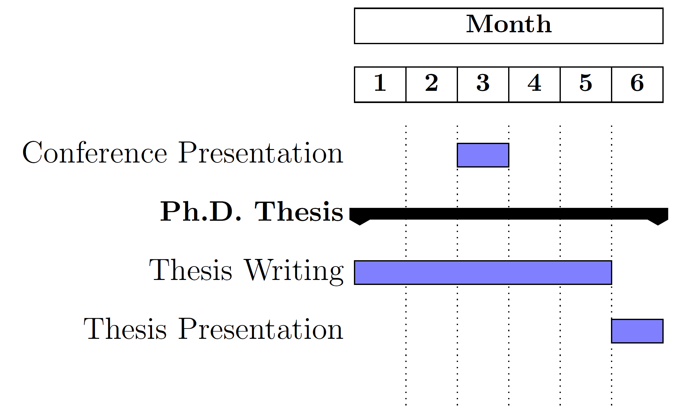Sponsored by

Supported by
Hosted by